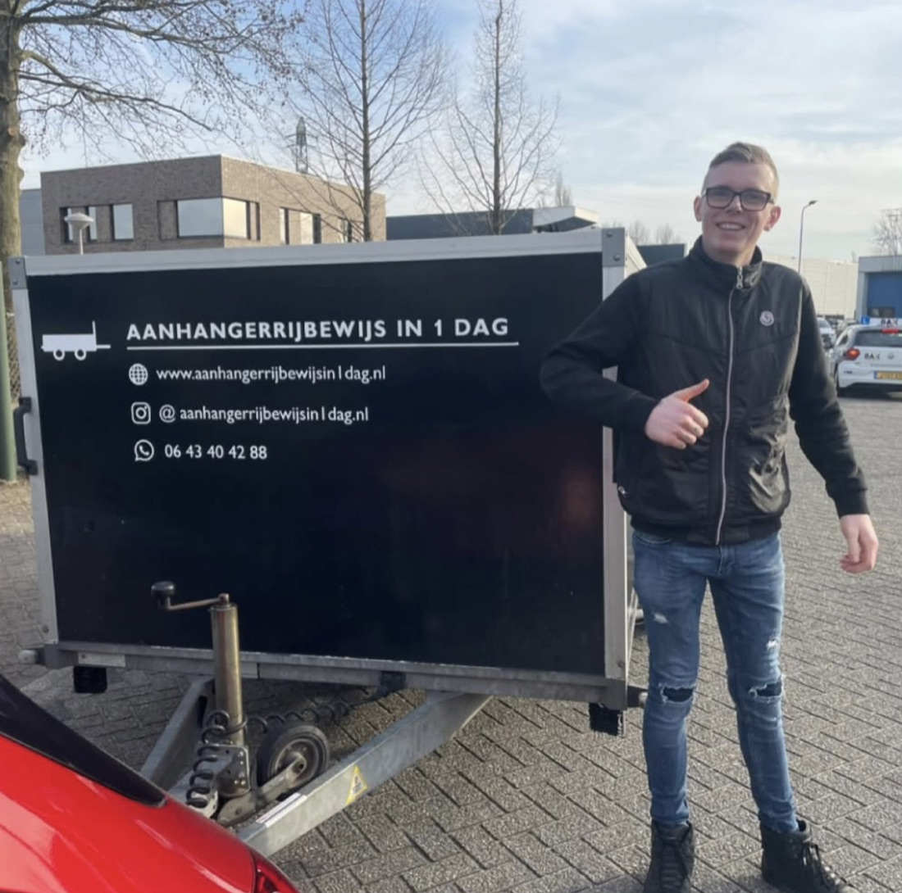
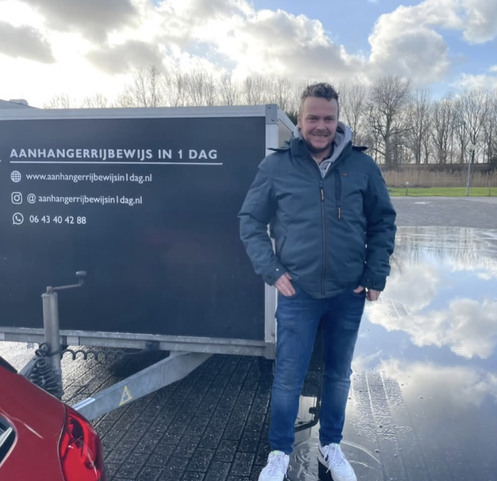
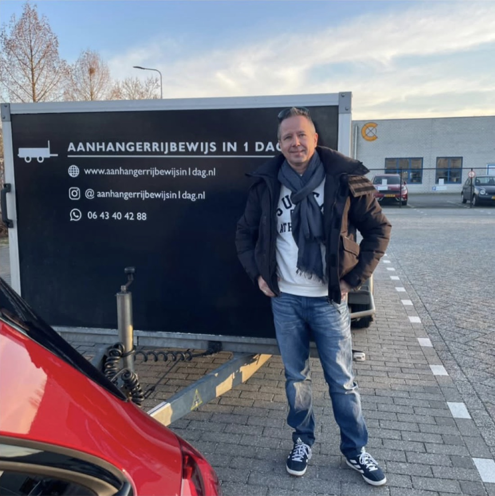
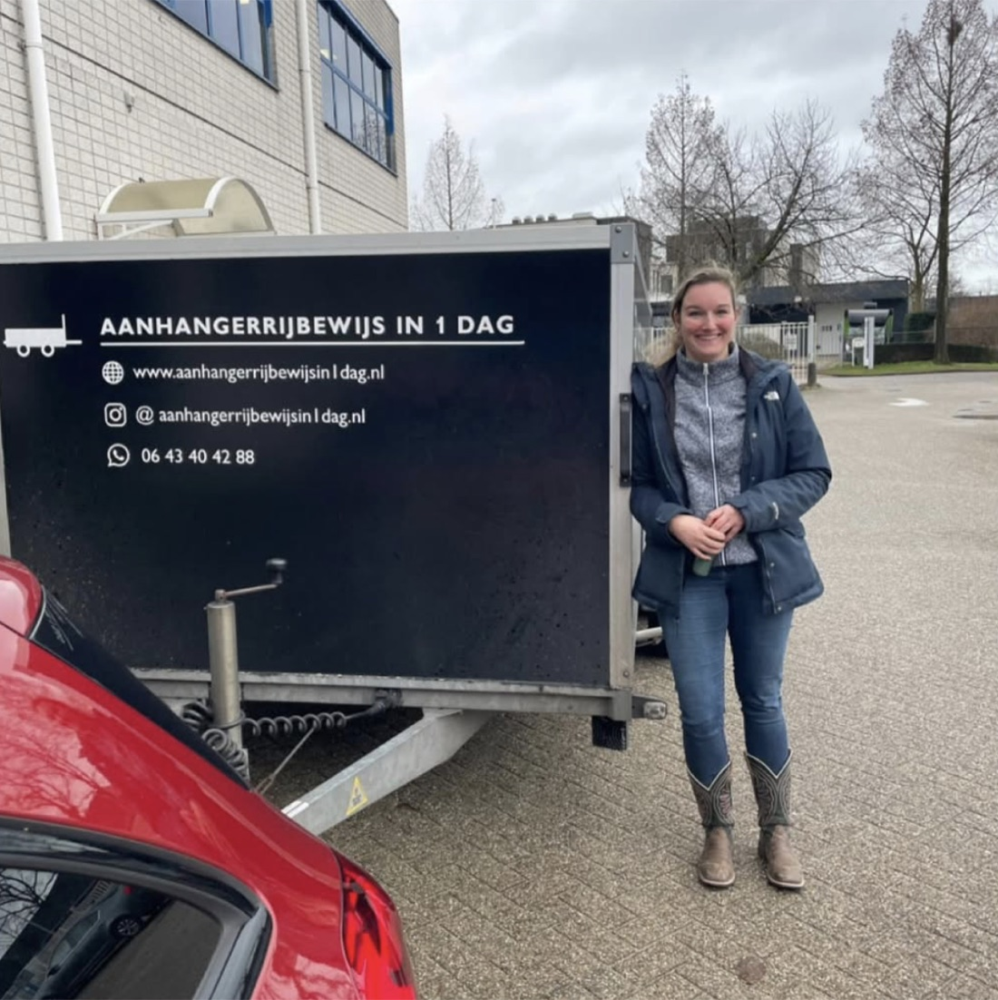
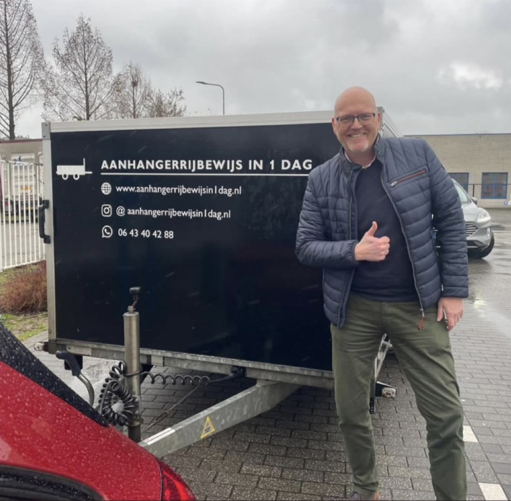
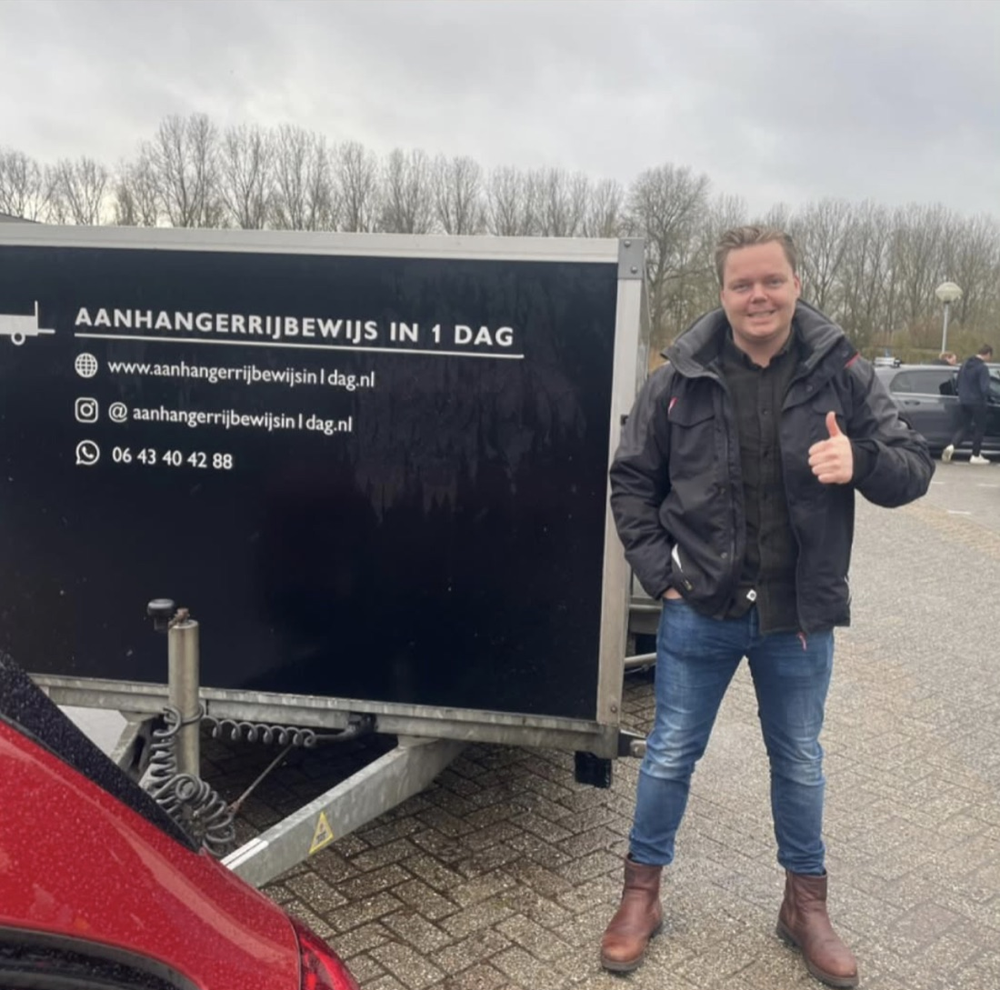
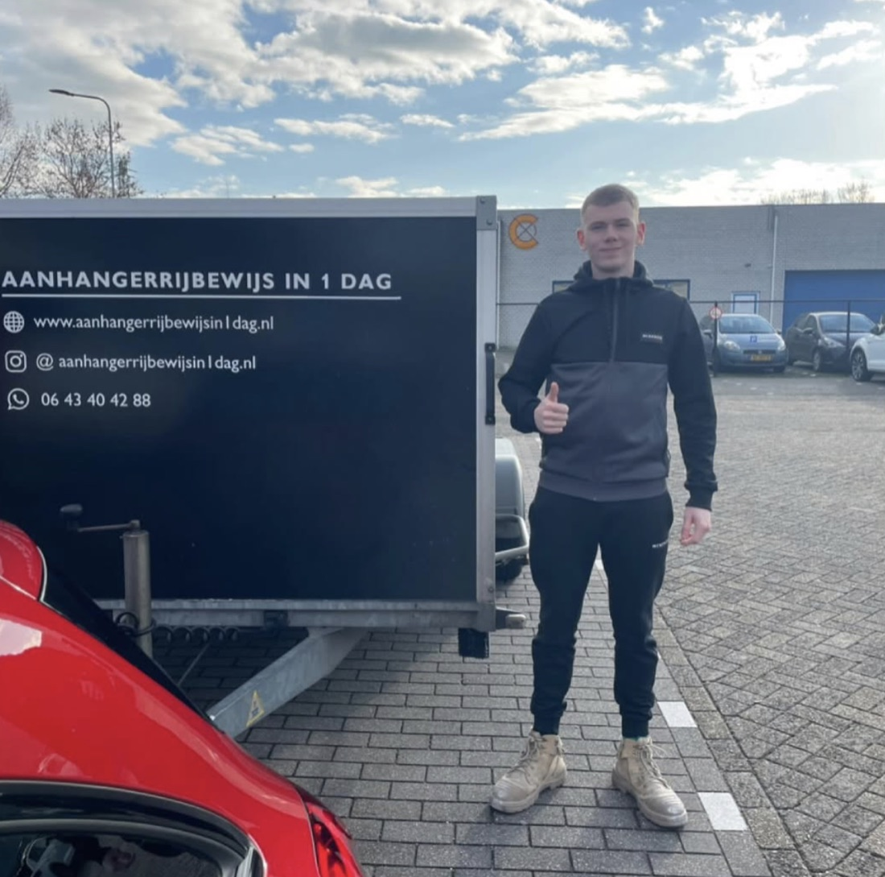
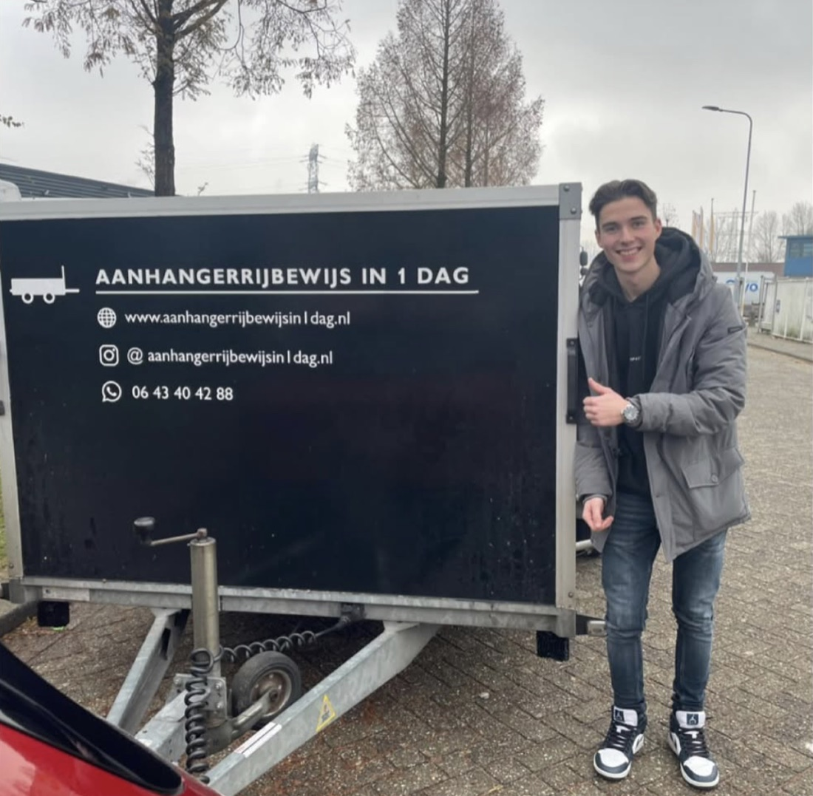
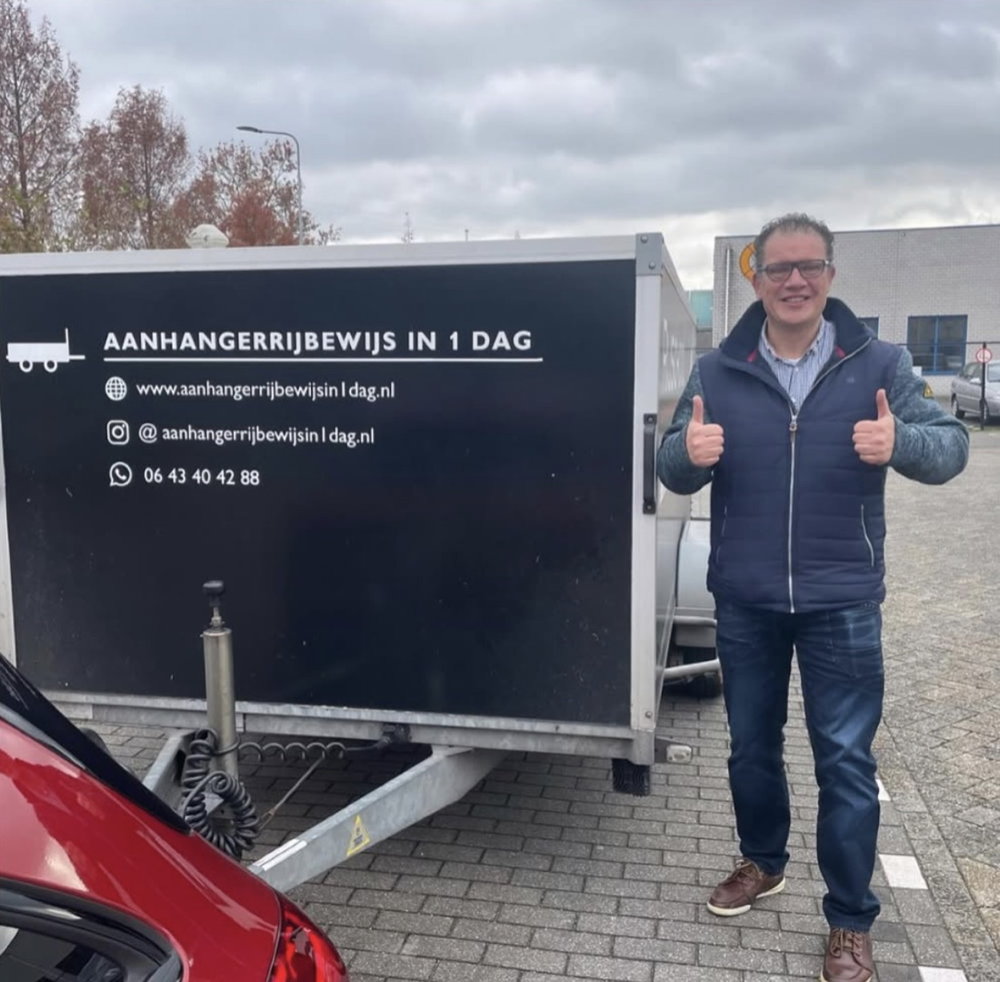
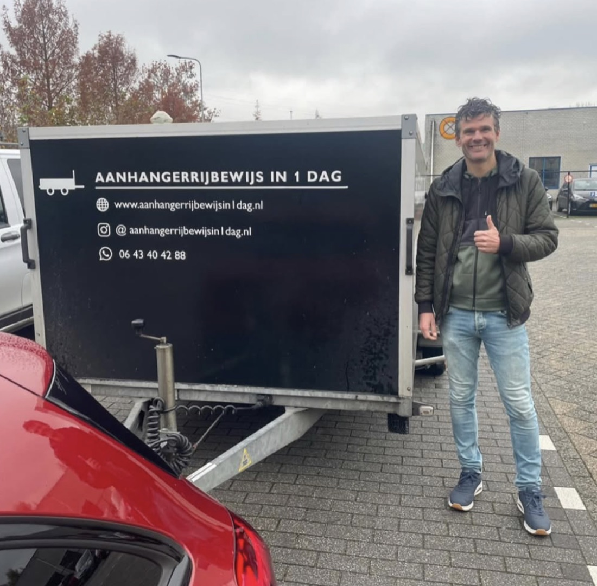

Reviews
Gisteren nog geen BE, vandaag wel
Dit zijn de woorden van cursisten zelf, onbewerkt. Wat steeds terugkomt: in één dag gehaald, snel terecht, rustige uitleg en een fijne auto met ruim zicht.
Over de BE-cursus
"Gisteren mijn aanhangerrijbewijs in één dag gehaald. Super duidelijke uitleg gekregen van een hele relaxte en geduldige instructeur. Een mooi pluspunt is de auto waarin je rijdt: deze rijdt makkelijk en je hebt goed en ruim zicht. Een hele fijne ervaring!"
"In twee dagdelen mijn E-rijbewijs gehaald dankzij de ruime kennis en ervaring van een zeer goede rijinstructeur. Ik was best zenuwachtig, maar Michael heeft mij op een leuke en leerzame manier goed voorbereid op het examen. Michael, bedankt!"
"Ik heb bij Michael mijn rijbewijs in één dag gehaald. Michael is een vriendelijke, fijne en rustige instructeur. Hij legt duidelijk uit wat de bedoeling is en stelt je gerust wanneer dat nodig is. Tegelijkertijd zorgt hij ook voor de juiste scherpte tijdens de lessen. Mijn BE-rijbewijs gehaald met een mooi resultaat. Bedankt Michael!"
"Een aanrader voor iedereen die zijn aanhangerrijbewijs wil halen. Michael heeft op korte termijn plek, geeft duidelijke en geduldige lessen en rijdt in een hele fijne auto met handige hulpmiddelen. Hij gaf mij het vertrouwen dat ik nodig had voor het examen en daardoor heb ik het in één keer gehaald. Dankjewel Michael!"
"Michael heeft ervoor gezorgd dat mijn aanhangerrijbewijs behalen een stuk makkelijker werd. Doordat hij alles rustig en duidelijk uitlegt en goed aangeeft waar je op moet letten, had ik maar een paar uur les nodig om mijn rijbewijs te halen. Echt een aanrader!"
"Super! Ik wilde graag op korte termijn mijn BE-rijbewijs halen en dat was hier mogelijk. De begeleiding was zeer prettig, met uitgebreide uitleg en het bespreken van verschillende scenario's. Tijdens het rijden krijg je goede tips waardoor je met vertrouwen het examen ingaat. Een aanrader!"
"Eerste keer geslaagd voor mijn aanhangerrijbewijs bij Michael! Een zeer aardige en rustige instructeur die alles goed uitlegt en je goed voorbereidt op het examen. Daarnaast ook een mooi wagenpark om in te lessen. Bedankt Michael!"
"Ik kon op korte termijn geholpen worden voor mijn aanhangerrijbewijs. De eendaagse cursus was duidelijk en alles werd goed uitgelegd. Bij het eerste examenmoment meteen mijn rijbewijs gehaald. Een echte aanrader!"
"Erg fijne rijschool. Ik gaf aan dat ik de lessen liever over twee dagen wilde verdelen en dat was geen probleem. Ze denken goed met je mee en geven duidelijke uitleg. Een prettige ervaring!"
"Geweldige begeleiding gehad en in één keer geslaagd voor mijn aanhangerrijbewijs. Heel fijn hoe er stap voor stap naar het examen werd toegewerkt, waardoor ik tijdens het examen geen verrassingen meer tegenkwam. Bedankt Michael!"
"Super rijschool! Ik kon snel terecht voor mijn aanhangerrijbewijs. Michael reageert snel, legt alles duidelijk uit en zorgt voor een fijne begeleiding. Ik had niet op iets beters kunnen hopen!"
"Topinstructeur, fijne leswagen en goede instructies. Ik kon nergens snel terecht, maar hier hebben ze mij toch snel kunnen helpen. Erg fijn!"
"Michael heeft mij geweldig goed begeleid naar mijn E achter B. Zijn goede tips en duidelijke aanwijzingen hebben mij enorm geholpen. Ik kan hem zeker aanbevelen aan iedereen die zijn E achter B wil halen!"
"Toprijschool! Mijn motor- en aanhangerrijbewijs allebei in één keer gehaald dankzij de goede lessen. Zeker een aanrader!"
"Dit is een hele goede rijschool met een super fijne instructeur. Ik zou mijn aanhangerrijbewijs zo opnieuw hier halen!"
"Mijn aanhangerrijbewijs gehaald in één dag. Michael legt alles duidelijk uit op een prettige manier. Zeker een aanrader!"
"In één keer geslaagd voor mijn BE-rijbewijs. Dit kwam zeker door de duidelijke en gestructureerde instructies van Michael. Bedankt!"
"Topcursus! Vriendelijk, duidelijk en snel geregeld. Een aanrader voor iedereen die zijn aanhangerrijbewijs nog moet halen!"
"Vandaag de 1-daagse cursus voor het aanhangerrijbewijs gedaan. Alles werd rustig en duidelijk uitgelegd. Echt een super lesbedrijf. Michael, bedankt!"
"Super fijne rijschool! Mijn aanhangerrijbewijs in één keer gehaald dankzij de goede begeleiding en duidelijke lessen."
De muur van geslaagden










Over onze verkeersschool
Dezelfde instructeurs leiden bij moederschool Verkeersschool M. van Heugten ook op voor auto en motor. Ook die cursisten laten we aan het woord.
"Enorm fijne rijschool! Met Michael als instructeur was het elke week weer leuk om te mogen rijden. Door zijn goede begeleiding ben ik goed klaargestoomd voor mijn praktijkexamen en heb ik deze in één keer gehaald. Heel erg bedankt voor de leuke rijlessen en wie weet tot een volgend rijbewijs!"
"Erg fijne rijschool. Ze denken goed met je mee en leggen alles rustig en duidelijk uit, waardoor je het autorijden snel onder de knie krijgt. Ze zijn flexibel met de lestijden en je kunt makkelijk lessen plannen of verplaatsen. De sfeer was altijd prettig, met ruimte voor een grapje en een gezellig muziekje. Ik had Michael als instructeur en ben daar erg blij mee. Topbedrijf, zeker een aanrader!"
"Michael is een fijne rijinstructeur. Hij neemt de tijd om alles goed uit te leggen en weet je goed klaar te stomen voor het examen. Hierdoor stapte ik met een zeker gevoel de auto in. Vandaag mijn rijexamen gehaald en super blij met het resultaat. Dankjewel Michael!"
"Michael is een super vriendelijke, fijne en rustige instructeur. Hij legt alles duidelijk uit en geen enkele vraag is gek. Ik heb het ontzettend naar mijn zin gehad tijdens de lessen. Dankzij zijn begeleiding voelde ik mij goed voorbereid op het examen en ging ik met vertrouwen de weg op."
"Zeer fijne rijschool! Ik heb alles in één keer gehaald. De rijinstructeurs zijn vriendelijk, geduldig en geven duidelijke uitleg. Ze bereiden je goed voor zodat je zelfverzekerd achter het stuur zit. Daarnaast rijd je ook nog eens in een hele mooie auto. Een echte aanrader!"
"Door de goede uitleg en tips van de instructeurs ging ik met voldoende vertrouwen het examen in en heb ik het gehaald. Het plannen van de rijlessen verliep soepel waardoor je geen lessen tekortkomt. Al met al een hele goede rijschool!"
"Na twee jaar rijles en meerdere keren gezakt te zijn, ben ik overgestapt naar Michael. Dankzij zijn lessen heb ik het verschil kunnen maken en ben ik bij hem meteen geslaagd. Zijn begeleiding heeft mij enorm geholpen!"
"Erg fijne rijschool. Altijd een ontspannen sfeer tijdens het rijden. Ze denken goed met je mee en geven duidelijke uitleg over punten die verbeterd moeten worden om het examen te halen. Zeker een aanrader!"
"Met Michael als instructeur weet je zeker dat het goed zit! Een fijne manier van lesgeven, duidelijke uitleg en ook ruimte voor gezelligheid en humor in de auto. Bedankt voor de lessen Michael! De volgende keer weer bij jou voor de motor."
"Ik zou deze rijschool aan iedereen aanraden! Alle lessen zijn soepel en goed verlopen. Dankzij de goede begeleiding heb ik snel mijn rijbewijs kunnen halen. Een toprijschool!"
"Super fijne rijschool. Je krijgt duidelijke uitleg en opbouwende feedback waar je echt iets mee kunt. Hierdoor ga je iedere les vooruit en word je steeds zekerder achter het stuur. Ik kan deze rijschool alleen maar aanbevelen!"
"Super fijne rijschool. Alles wordt duidelijk uitgelegd waardoor je goed voorbereid wordt op het examen. Dankzij de goede begeleiding ga je met vertrouwen het examen in. Zeker een aanrader!"
"Echt een toprijschool met een vriendelijke instructeur! Dankzij de duidelijke uitleg en goede begeleiding ben ik in één keer geslaagd. Ontzettend tevreden over de ervaring!"
"Hele fijne lessen gehad hier en in één keer mijn rijbewijs gehaald. Een toprijschool!"
"Toprijschool met duidelijke uitleg en goede communicatie. Dankzij de fijne begeleiding mijn rijbewijs in één keer gehaald. Zeker een aanrader!"
"Prettige rijschool met een hele fijne en rustige instructeur. Hij legt alles duidelijk uit en zorgt voor een goede begeleiding. Een hele goede ervaring gehad!"
"Een hele fijne instructeur. Door de goede voorbereiding en duidelijke uitleg ging het examen uiteindelijk erg makkelijk. Een sterke aanrader voor iedereen!"
"Goede rijschool met zeer fijne communicatie. Dankzij de goede begeleiding word je goed voorbereid op het rijexamen!"
"Een hele fijne tijd gehad. Alles wordt super goed uitgelegd en je wordt goed begeleid tijdens het lessen. Als je rijlessen nodig hebt, ga hier naartoe. Echt een aanrader!"
Onze verkeersschool scoort 5,0 uit 31 reviews op Clickdrive, geregistreerd bij Verkeersschool M. van Heugten. De reviews op deze pagina komen van cursisten van beide merken.
Volgende week op deze muur?
Plan je cursusdag en sluit hem af zoals iedereen hierboven: met je BE op zak.